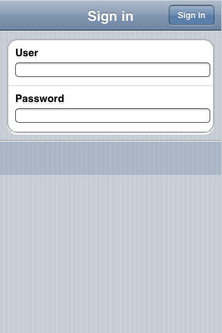
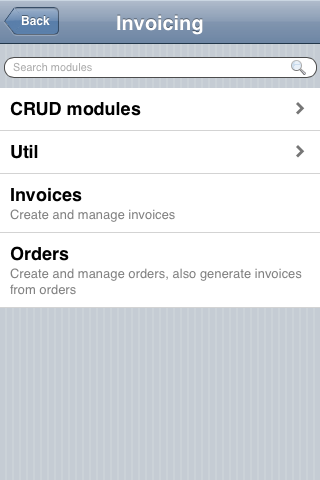
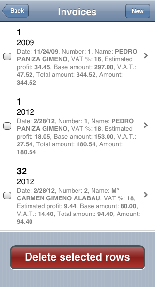
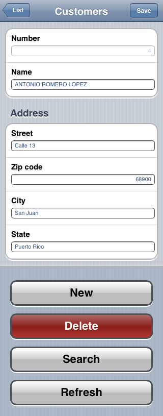
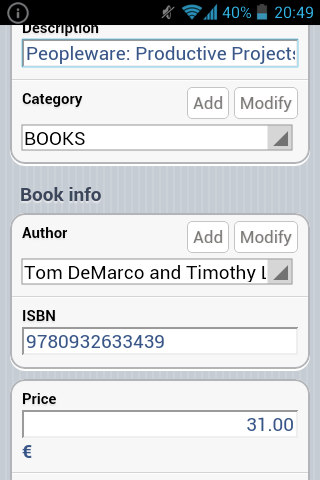
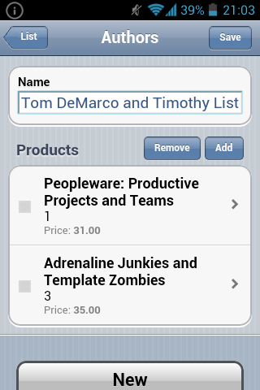
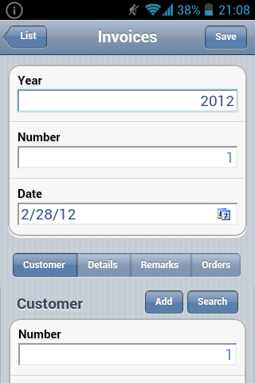

Mobile user interface
With
XavaPro you only have to access to your OpenXava application from a mobile browser to enjoy a mobile suitable interface, without writing any additional code.
The mobile user interface includes security, module navigation, list mode, detail mode, properties, references, collections, groups and sections. All this with the typical OpenXava behavior plus your own actions that will work fine for most case.
This is the login page:

This is the menu:

The list mode:

The detail mode:

A group:

A collection:

Sections:
